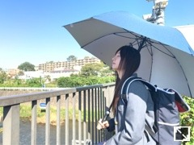
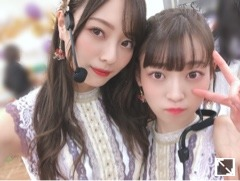

じっくーり。ゆっくーり。
お久しぶりになってしまいました(；；)
いかがお過ごしですか？
最近は食べたいもの、
行きたいお店のリストを作ってます
美味しいものが溢れる世の中。幸せですね
いちじくハマってます。
ドライいちじく。
チーズと食べるのがすきです♪
今年は例年ほど寒く感じませんが、、
相変わらず乾燥が凄いので
最近はオイルと保湿力の高いクリームの
ダブル使いしています。
オイルは今はWELEDAの緑！
クリームは数ある中からその日の気分でチョイス。
そんな瞬間も、日常の中の好きな一時。
野外の撮影現場は特に
手先の冷えと乾燥が凄いので
こまめにネイルオイルも欠かせません。
私はメルヴィータのローラータイプのマルチオイルを使っています〜
香りも癒し。
きっとすぐ、また春が来ますね
去年と同じ場所ということもあり
ステージから見える客席とか楽屋とか
しっかり鮮明に覚えていて
帰ってきたぞ〜！って気持ちになりました。
ご飯が最高に美味しかった〜！！
ここぞとばかりにたくさん食べてしまった、、
久々にお腹いっぱい以上に食べた。
１０１タワー！
めちゃくちゃに綺麗でした！
また帰って来れるよう頑張ります！
台北の皆様ありがとうございました☀︎
そして。
「映像研には手を出すな！」
遂にクランクアップいたしました〜！
１０月末から始まった撮影。
思っていたよりずっと早く去っていってしまった。
毎日悩み苦しみ頭を抱えたことも
今思えば全部全部嬉しい悲鳴たちでした。
こんな経験もう二度とないぞという気持ちで挑みましたので
一ミリの瞬間の感情も情景も忘れたくはないのです。
毎日がお祭りのようで。（笑）
目の前で起こることがとてつもなくて
改めて私はとんでもない世界に足を踏み入れたのだなと、少し怖くなるほどでした。
すごくたくさん笑いました！
スクリーンの中の金森は眉間にシワが寄っていることが大半だと思うのですが
現場での梅澤はたくさん、笑っていました。
現場は素晴らしい方たちの集まりでした。
いや〜、私もあんな大人になりたいです、、
浅草氏と水崎氏、とんでもなく可愛いので
皆様お楽しみに待っていてくださいね。

ちゃんとソバカスもあります。
金森氏、ありがとう
手元に台本がない。変な感じ
白石さん、そして琴子さんが
卒業発表されました。
琴子さんとは同い年で
成人式も一緒に出させていただいて。
自分をしっかり持っていて
凛とした立ち姿はいつも美しくて。
私が七つの大罪舞台が決まった時
話しかけてくださったこと、
鮮明に覚えています。
残りの時間少しでも多くお話できますように。
そして白石さん。
白石さんがいなければ、
乃木坂46としての梅澤美波はありませんでした。
私の人生を変えてくださった、
人生の中で間違いなく一番大きな影響を与えてくださった方です。
発表されて時間が経った今も
どうしても寂しくて寂しくて。
心が痛いほどに。寂しいです。
強く、かっこよく、美しく
いつでもキラキラしていて綺麗で。
見惚れてしまうほどに。
色々なものを背負い先頭に立つ姿は
私たち後輩が憧れる姿であり目指すべき姿。
それは永遠に変わりません。
白石さんのおかげで、
私はこんなにも素敵な人生を歩めています。
本当に感謝しても、しきれません。
最後まで感謝の気持ちを伝えていきたいとおもいます！
あと１ヶ月きりました。
４日間。
ナゴヤドーム！
楽しみましょうね。

会うといつもギュッときてくれる。
たまらなく愛おしい存在です。
では
おやすみなさい
好きなアニメ、映画、音楽、
ぜひ教えてください︎︎︎︎✌︎
Original：https://www.nogizaka46.com/s/n46/diary/detail/54803?ima=4940&cd=MEMBER